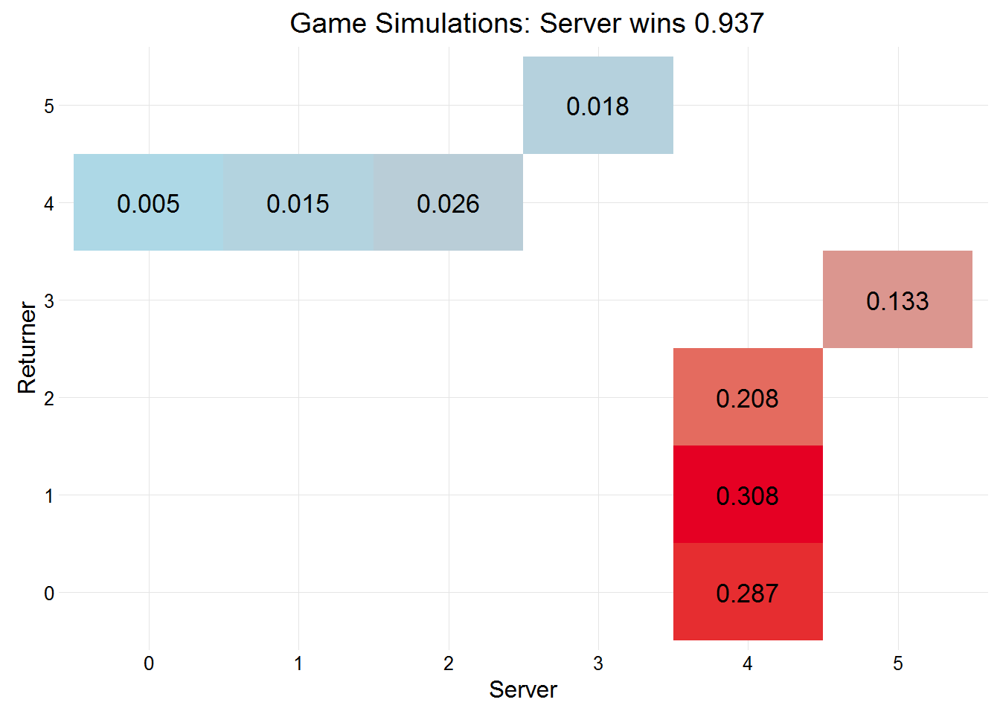
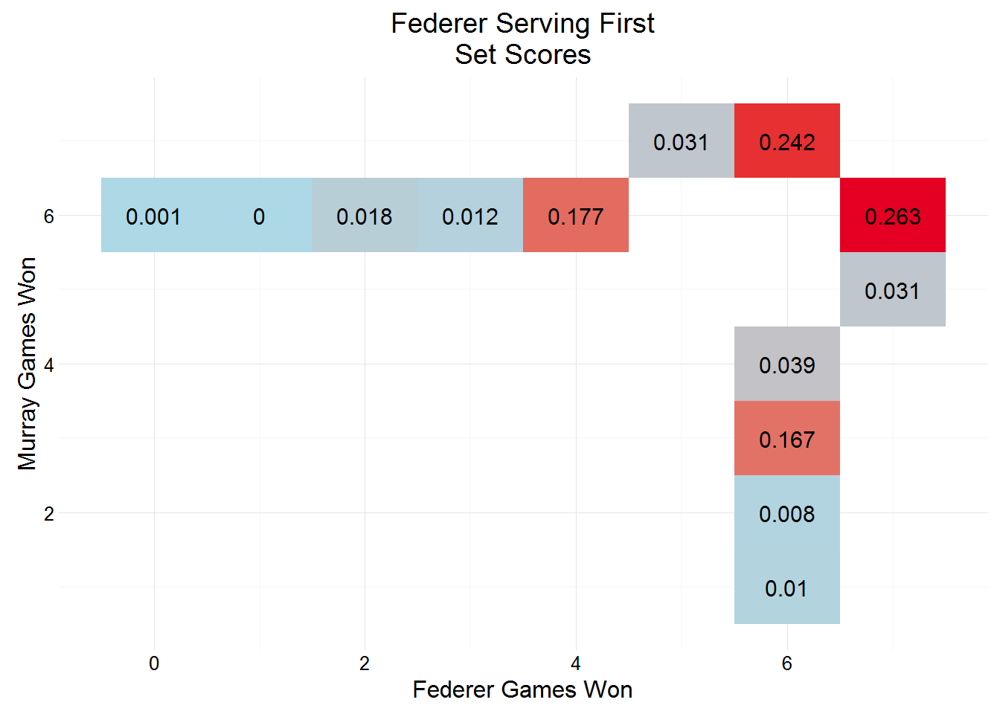
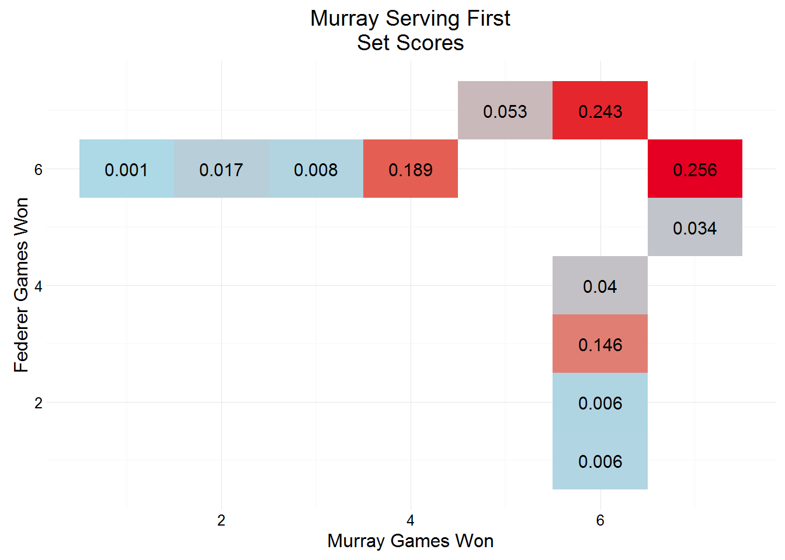

Today Andy Murray faces Roger Federer in the semi-final of Wimbledon 2015. This post will, like the Williams vs Sharapova from yesterday, look at some of the functionality of the package, focussing on simMatches and simDf.
Make sure the package is installed and loaded…
# devtools::install_github("durtal/servevolleyR")
library(servevolleyR)We need to estimate the probability that each player will win a point on his first serve, second serve, and the probability that his first serve will be in. To do this, the simplest way is to use serve statistics shown on each of the players ATP pages, Federer and Murray, filtered to this year, and played on grass, Federer has 59 service games, and Murray 57.
federer1 <- .83 # federer first serve win %
federer2 <- .51 # federer second serve win %
federerIn <- .70 # federer first serve in %
murray1 <- .81 # murray first serve win %
murray2 <- .57 # murray second serve win %
murrayIn <- .67 # murray first serve in %First a couple of plots that look at each players service games:
federerGames <- simGames(n = 1e4,
p = federer1,
p2 = federer2,
firstServe = federerIn)
federerGames##
## Simulation of 10000 service games:
## Server won 0.9366 (9366/10000) of games.
##
## Server probabilities:
## p p2 firstServe
## 0.83 0.51 0.7Federer won 0.9366 of his service games, in 2015 (according to the link above) he actually won 0.97 of service games. The score in each of the simulated service games is plotted below.
plot(federerGames)
murrayGames <- simGames(n = 1e4,
p = murray1,
p2 = murray2,
firstServe = murrayIn)
murrayGames##
## Simulation of 10000 service games:
## Server won 0.9349 (9349/10000) of games.
##
## Server probabilities:
## p p2 firstServe
## 0.81 0.57 0.67Murray won 0.9349 of his service games, in 2015 (according to the link above) he actually won 0.91 of service games. The score in each of the simulated service games is plotted below.
plot(murrayGames)simMatchesRather than simulate sets as well, I’ll jump straight to simMatches and simulate 1000 matches between Federer and Murray. It is followed by a summary of those 1000 matches on the left, and a plot on the right, showing the match scores.
fedmur <- simMatches(n = 1e3, sets = 5, tiebreaks = TRUE, finalSetTiebreak = TRUE,
pA = federer1, p2A = federer2, firstServeA = federerIn,
pB = murray1, p2B = murray2, firstServeB = murrayIn,
players = c("Federer", "Murray"))Federer wins 0.527 of matches between the two. Prices on Betfair put Federer’s chance of winning at 0.47.
summary(fedmur)##
## Simulation of 1000 matches:
##
## Player A (Federer) won 0.527 of matches.
##
## Server Probabilities:
## player p p2 firstServe
## Federer 0.83 0.51 0.70
## Murray 0.81 0.57 0.67
##
##
## playerB
## playerA 0 1 2 3
## 0 0.110
## 1 0.178
## 2 0.185
## 3 0.130 0.210 0.187plot(fedmur)Using simMatches means that each simulated set has at least 3 simulated sets, and at most 5 simulated sets. So 1000 Match simulations contains between 3000 and 5000 simulated sets. Following that, each set will have been 6 and 12 simulated service games, this means that there is a huge amount of simulated data. This data can be converted to a dataset using the simDf function, it can take some time to convert the list, so be patient. simDf only takes one set argument, the list returned by simMatches, but supplying .progress = "time" will add plyr’s progress bar to show how long it should take (I won’t add it here, but I will time the conversion).
start <- Sys.time()
fedmurDf <- simDf(fedmur)
finish <- Sys.time()Converting this list took 1.0169743 minutes, showing that it can take some time, more simulations, the longer it takes, but we now have a dataset of 47436 rows and 20 variables, explanation of these variables can be found at the bottom of the simMatches page.
dplyrFor manipulation of datasets, then dplyr is the best choice, and we’ll use ggplot2 for plotting. Below we load the dplyr and ggplot2 packages and filter the first set in the first simulation: the set ended in a tiebreak (gameNo goes up to 13), with Murray emerging as the winner of the set 7-6.
library(dplyr)
library(ggplot2)
fedmurDf %>%
filter(simNo == 1, setNo == 1)## simNo playerA playerB mA mB result setNo pA pB setA setB
## 1 1 Federer Murray 3 2 1 1 Federer Murray 6 7
## 2 1 Federer Murray 3 2 1 1 Federer Murray 6 7
## 3 1 Federer Murray 3 2 1 1 Federer Murray 6 7
## 4 1 Federer Murray 3 2 1 1 Federer Murray 6 7
## 5 1 Federer Murray 3 2 1 1 Federer Murray 6 7
## 6 1 Federer Murray 3 2 1 1 Federer Murray 6 7
## 7 1 Federer Murray 3 2 1 1 Federer Murray 6 7
## 8 1 Federer Murray 3 2 1 1 Federer Murray 6 7
## 9 1 Federer Murray 3 2 1 1 Federer Murray 6 7
## 10 1 Federer Murray 3 2 1 1 Federer Murray 6 7
## 11 1 Federer Murray 3 2 1 1 Federer Murray 6 7
## 12 1 Federer Murray 3 2 1 1 Federer Murray 6 7
## 13 1 Federer Murray 3 2 1 1 Federer Murray 6 7
## set_res gameNo serving p p2 firstServe game_res server returner
## 1 0 1 Federer 0.83 0.51 0.70 1 4 1
## 2 0 2 Murray 0.81 0.57 0.67 1 4 2
## 3 0 3 Federer 0.83 0.51 0.70 1 4 1
## 4 0 4 Murray 0.81 0.57 0.67 1 4 0
## 5 0 5 Federer 0.83 0.51 0.70 1 4 0
## 6 0 6 Murray 0.81 0.57 0.67 1 5 3
## 7 0 7 Federer 0.83 0.51 0.70 1 4 0
## 8 0 8 Murray 0.81 0.57 0.67 1 7 5
## 9 0 9 Federer 0.83 0.51 0.70 1 4 0
## 10 0 10 Murray 0.81 0.57 0.67 1 4 1
## 11 0 11 Federer 0.83 0.51 0.70 1 4 2
## 12 0 12 Murray 0.81 0.57 0.67 1 6 4
## 13 0 13 Federer NA NA NA 0 NA NAWe can use this dataset to establish the probability of set scores, depending on who opens the serving:
setSummary <- fedmurDf %>%
filter(gameNo == 1) %>% # filter just gameNo == 1
group_by(serving, setA, setB) %>% # who serves first, and what were the scores
summarise(n = n()) %>% # count how many
ungroup() %>%
group_by(serving) %>%
mutate(pct = n / sum(n)) # calculate proportionGiven their very similar service probabilities it’s unsurprising to see set scores so tight, with a tiebreak estimated at around 0.5 regardless of who opens the serving.

